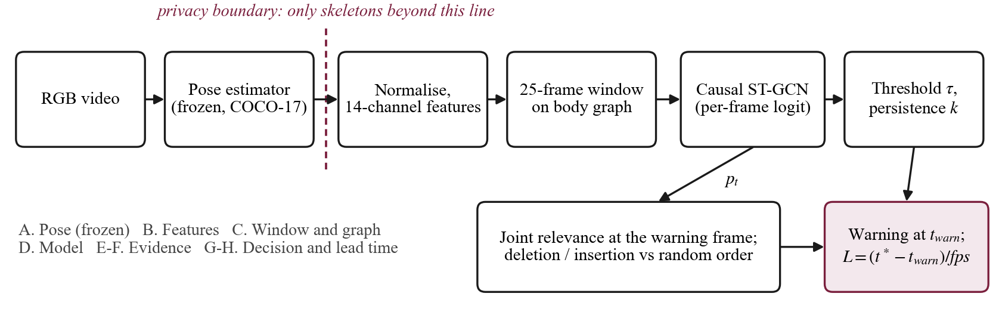
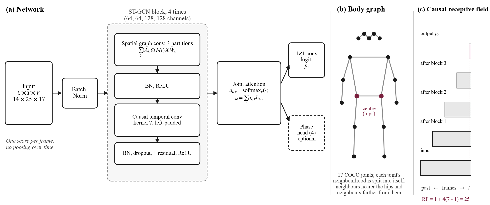
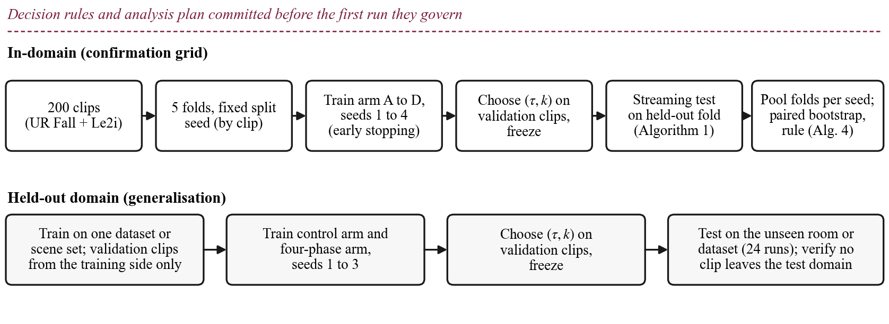
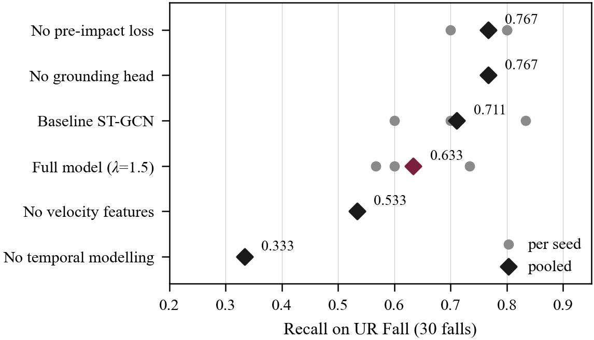
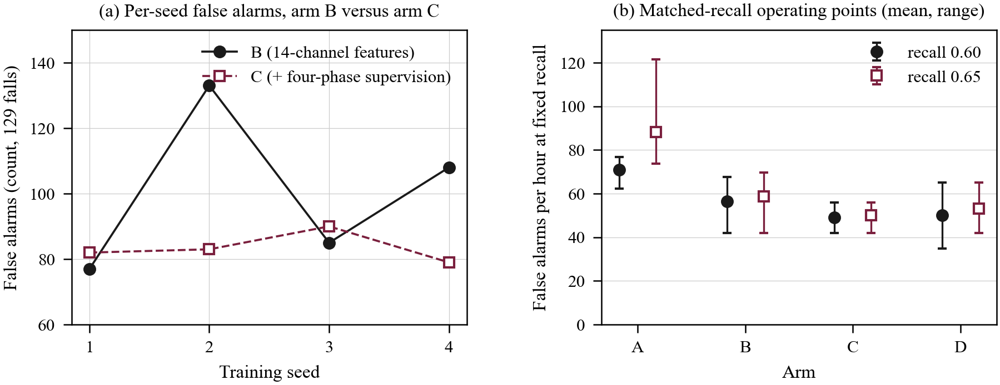
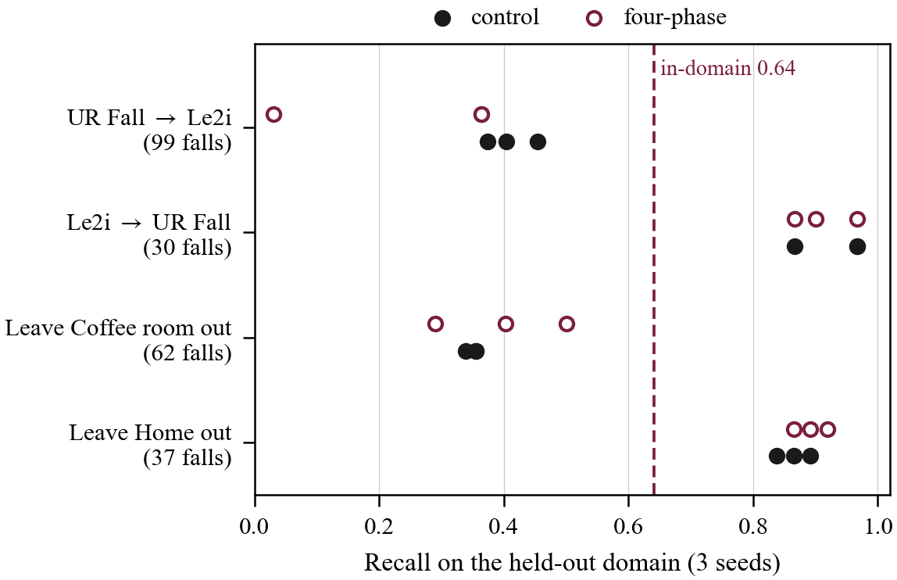
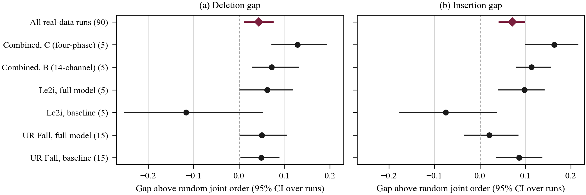

I. Introduction
A fall that is recognised only after the body reaches the floor can summon help, but it cannot protect the body during the fall. Devices such as wearable airbags have to act before contact, and an early prototype inflated its airbag on a trigger issued about 300 ms before impact [1]. Pre-impact detection has therefore been studied mostly with wearable inertial sensors. The KFall benchmark reports mean lead times of 333 to 403 ms for three detectors [2], and a distilled network evaluated on the same data reports 551 ms [3].
A camera needs nothing to be worn or charged, but video is often unacceptable in private rooms. A pose skeleton discards the pixels and keeps the motion, which makes it an attractive intermediate representation. Graph-convolutional skeleton models now report accuracies above 99% for fall versus non-fall classification on UR Fall and Le2i [4], but that is a recognition task. Anticipation from cameras has received far less attention. The most closely related study we are aware of classifies short skeleton windows cut at a fixed lead time before impact [5].
Three features of current evaluation practice limit what such results say about deployment. First, windows cut at a fixed lead make lead time a property of the input rather than an outcome, whereas a deployed system streams, issues warnings at times of its own choosing, and is charged for every warning during normal activity. Second, accuracy and F1 on balanced sets hide the alarm rate per hour of ordinary life, which decides whether a system can be tolerated. Third, random or unspecified splits put clips from the same rooms and cameras in both training and test sets, so they cannot reveal sensitivity to dataset shift [6].
This paper evaluates a causal ST-GCN on two public datasets under a streaming, pre-registered protocol. We ask four questions.
- RQ1. Can a lightweight skeleton model warn before impact with useful lead time at high recall, and at what false-alarm rate?
- RQ2. Are the joints named at each warning faithful to what drives the model’s score?
- RQ3. Does an explicit pre-impact objective, or auxiliary phase supervision, improve anticipation?
- RQ4. Do in-domain results survive the removal of a room or a dataset from training?
The contributions are as follows.
- A streaming evaluation protocol for fall anticipation in which lead time is measured on warned falls, a warning before the labelled imminent window counts as a false alarm, and operating points are frozen on validation clips.
- Pre-registered confirmatory tests, on four fresh seeds, of two design hypotheses that looked promising on a single seed. Neither is supported, and the time-weighted loss lowers recall on UR Fall.
- A held-out-domain evaluation (24 runs) in which recall ranges from 0.03 to 0.97 when a room or dataset is withheld.
- A deletion/insertion evaluation of the joints named at each warning over 90 runs, analysed with a run-level bootstrap.
- A scripted audit that recomputes every reported number from the saved run folders.
Section II reviews related work, Section III describes the data, model and protocol, Section IV reports the results, and Sections V and VI discuss their implications and limits.
II. Related Work
A. Post-Fall Detection on UR Fall and Le2i
UR Fall contains 70 sequences, 30 of falls and 40 of activities of daily living, recorded with Kinect cameras [7]. Le2i was recorded in home-like environments [8]. Recent skeleton-based graph models report very high accuracy on both. Shin et al. report 99.15% on UR Fall and 99.64% on ImViA/Le2i for a three-stream ST-GCN with adaptive feature aggregation [4]. In the same paper the fall class on UR Fall has a sensitivity of 86.67%, and frames without an extractable skeleton (853 of 2,995 on UR Fall) were discarded. The text does not state the splitting protocol, and the task is classification of fall against non-fall rather than anticipation.
B. Pre-Impact Detection
Wearable sensors. Yu et al. released KFall (32 participants, 21 daily activities and 15 simulated falls, low-back inertial sensor, fall times labelled from synchronised video) and benchmarked three detectors on a subject-wise split (26 training and 6 test subjects; 444 fall and 507 non-fall test files) [2]. Lead time is the interval between the detection moment and impact. A ConvLSTM reached sensitivity 99.32%, specificity 99.01% and a mean lead time of 403 ± 163 ms, against 385 ± 159 ms for an SVM and 333 ± 160 ms for a threshold rule. A knowledge-distillation model on the same dataset reports an F1-score of 92.66% and a lead time of 551.3 ms [3].
Cameras. Jesudhas et al. apply an LSTM to a small set of fall-specific features of 2-D skeleton joints (MoveNet) on UP-Fall [9] and describe the work as the first attempt at pre-impact detection from CCTV imagery [5]. Windows of 15 frames are drawn at a fixed lead before impact and classified. With a random 80:20 split they report a macro-F1 of 0.88 at a 0.5 s lead (pre-impact class: precision 0.93, recall 0.72), falling from 0.93 at 0.1 s to 0.69 at 0.8 s. Table I summarises these studies next to the present one.
C. Skeleton Networks
ST-GCN applies graph convolution over the body graph and temporal convolution over frames [10]. The present model is a causal variant: temporal convolutions pad on the left only and every derived feature uses backward differences, so the network itself cannot look ahead. The offline pose normalisation that precedes it is the one non-causal step, discussed in Section V. We train it with Adam [11] and a cosine learning-rate schedule [12].
D. Explanation Faithfulness
Deletion and insertion curves were introduced for image classifiers in RISE [13]; related region-perturbation measures were studied earlier [14]. Both ask whether removing the inputs an explanation ranks highest hurts the score more than removing random ones. Whether attention weights are explanations at all is contested: Jain and Wallace show that they often disagree with gradient-based importance [15], Wiegreffe and Pinter argue that the answer depends on the definition and the test used [16], and saliency maps in general can fail basic sanity checks [17]. We treat the question as empirical for one architecture.
E. Reporting Practice
Mistaking the generation of a hypothesis for its test lowers the credibility of a finding, and hindsight bias makes the mistake hard to avoid [18]. Model-comparison studies in this area rarely guard against it. Here, the decision rules for the confirmation grid and for the held-out-domain protocols were committed before the first run each governs (Section III), and intervals come from a paired bootstrap [19].
III. Materials and Methods
Table II lists the symbols used in this section.
| Symbol | Meaning |
|---|---|
| t* | Impact frame (first ground contact) |
| W, D | Imminent window in frames; in seconds, D=W/fs |
| fs | Frame rate of a clip |
| C, T, V | Channels, window length and joints (14, 25, 17) |
| pt | Per-frame imminence probability |
| τ, k, R | Score threshold, persistence and refractory period (frames) |
| twarn, L | Warning frame and lead time |
| λ | Pre-impact time-weighting strength |
| Ak, Mk | Adjacency of partition k and its learnable edge importance |
| at,v | Joint attention weight at frame t, joint v |
| Δdel, Δins | Deletion and insertion faithfulness gaps |
A. System Overview
Fig. 1 shows the processing chain. A frozen pose estimator converts video into 17-keypoint skeletons, after which pixels are discarded, so only skeletons are stored and modelled. Skeletons are normalised, enriched with motion features and cut into windows. A spatio-temporal graph network scores every frame with an imminence probability, a threshold-and-persistence rule turns the score stream into warnings with a lead time, and at each warning the relevance of every joint is extracted and tested by deletion and insertion.

B. Datasets
We use UR Fall (70 sequences, camera 0) and the Home and Coffee-room scenes of Le2i (130 clips), pooled into a combined benchmark of 200 clips, 129 falls and 71 normal clips (Table III). Every clip carries its own frame rate and all frame counts are converted to seconds, so pooling clips recorded at 24 to 30 frames per second is safe. The impact frame t* comes from each dataset’s own annotation (the first frame labelled “lying” on UR Fall, the annotated fall end on Le2i) and never from the skeleton the model reads, so lead time is not circular. The UR Fall label falls at or after ground contact, which shortens measured lead time. A procedurally generated fixture of 320 clips was used only to test the code and is excluded from every result. Neither dataset publishes actor identity, so splits are independent by clip, not by subject, and may overstate performance on unseen people.
| Property | UR Fall | Le2i (Home, Coffee room) | Combined |
|---|---|---|---|
| Clips (falls / normal) | 70 (30 / 40) | 130 (99 / 31) | 200 (129 / 71) |
| Duration; normal activity | 6.6 min; 5.8 min | 28.6 min; 20.6 min | 35.2 min; 26.4 min |
| Frame rate | 30 fps | 24 to 25 fps | 24 to 30 fps |
| Frames with a usable skeleton | 79.8% | 85.3% | n/a |
| Impact frame | first frame labelled “lying” | annotated fall end | dataset annotation |
| Frames before impact (min / median / max) | 33 / 56 / 177 | 1 / 161 / 1,115 | n/a |
| Frames per phase (normal / imminent / falling / grounded) | 9,664 / 469 / 930 / 873 | 28,178 / 1,632 / 2,289 / 9,967 | 37,842 / 2,101 / 3,219 / 10,840 |
C. Pose and Features
Skeletons follow the COCO 17-keypoint layout from a frozen, off-the-shelf pose estimator (Ultralytics YOLO11n-pose). Joints below a confidence of 0.30 (0.35 for the UR Fall ablations) are treated as missing and linearly interpolated. Coordinates are centred on the mid-hip and divided by the clip’s median torso length, so they are independent of where the person stands and how far away the camera is. Table IV defines the channels. The UR Fall ablations use position and velocity (x, y, vx, vy); the combined-benchmark arms use either the same four channels (arm A) or all 14 (arms B–D). Velocities and accelerations are backward differences, clipped to loose bounds so that a single pose-estimator dropout cannot set a channel’s scale. In the offline evaluation, however, interpolation uses the observed frames on both sides of a gap and the scale is the median torso length over the clip, whereas a live system can only hold the last value and track a running median.
| Channels | Count | Definition |
|---|---|---|
| x, y | 2 | Joint position after centring on the mid-hip and scaling by the median torso length |
| vx, vy | 2 | Backward-difference velocity, clipped to ±30 torso lengths per second |
| ax, ay | 2 | Backward-difference acceleration, clipped to ±300 |
| bx, by | 2 | Bone vector: offset from the joint to its parent in a fixed spanning tree (the mid-hip and mid-shoulder act as parents, which keeps the features mirror-symmetric) |
| ḃx, ḃy | 2 | Backward-difference rate of the bone vector |
| θ, θ̇ | 2 | Trunk angle from vertical (sign dropped, so forward and backward falls look alike) and its rate; shared by all joints |
| h, ḣ | 2 | Mid-hip height as a whole-body summary, and its vertical rate; shared by all joints |
D. Network Architecture
The network (Fig. 2) maps a window X ∈ ℝC× T× V to one logit per frame. The input channels are batch-normalised and passed through four ST-GCN blocks with 64, 64, 128 and 128 channels. Each block first applies a spatial graph convolution over the one-hop neighbourhood of every joint, split into K=3 partitions: the joint itself, neighbours nearer the body centre (the hips) and neighbours farther from it [10],
where Ak are row-normalised adjacency matrices, Mk is a learnable edge-importance matrix initialised to ones, and Wk is a 1× 1 convolution. A temporal convolution of kernel size κ = 7 then pads only the past, so that the output at frame t reads frames t-6,…,t only,
followed by batch normalisation, dropout (0.1), a residual connection and a ReLU. With four blocks of kernel 7 and dilation 1 the receptive field is 1+Σl(κ-1)dl = 25 frames, equal to the input window on the combined benchmark (30 frames on UR Fall). A joint-attention module then weights the joints of each frame from that frame’s own features, which keeps the weights causal and attributable to a single frame–joint pair,
A 1× 1 convolution maps zt to the imminence logit and pt is its sigmoid. The attention weights are what we report as the evidence for each warning (we call the module the grounding module). The model has about 0.4 million parameters. An optional four-way phase head (normal, imminent, falling, grounded) sits beside the imminence head and adds auxiliary supervision. The ablation variants change one component each: “without grounding” replaces the attention pooling by a mean over joints, “without temporal modelling” sets the temporal kernel to 1 and averages the window into a single score, and “without velocity” removes the velocity channels.

E. Labels and Objective
With W the length of the imminent window in frames (17 frames, 0.68 s, on the combined benchmark; 20 frames, 0.67 s, on UR Fall), the binary target is
The per-frame loss is class-weighted binary cross-entropy with positive weight ρ = min{(1-π)/π, 20}, where π is the positive frame fraction in the training split. The pre-impact objective scales each frame inside the imminent window by an exponential in the time to impact dt = (t*-t)/fs,
and wt = 1 elsewhere. Z normalises the mean weight over the window to one, so λ can change without changing the effective learning rate, and λ = 0 recovers the plain loss. With mt the mask of non-ignored frames and ℓt the weighted cross-entropy of frame t,
where the last two terms exist only for the phase arms. The four phases are normal, imminent (the W frames before the annotated fall onset), falling (onset to impact) and grounded (after impact); Lphase is a cross-entropy over them with capped inverse-frequency class weights, and Lcons is the mean squared difference between pt and the phase head’s probability mass on the imminent and falling phases. The full UR Fall model uses λ = 1.5; all combined-benchmark arms use λ = 0 because the UR Fall result below showed no benefit from the weighting.
F. Decision Rule and Operating-Point Selection
Algorithm 1 turns the score stream into warnings. A warning fires at the k-th consecutive frame at which the score reaches a threshold τ, and a refractory period of R frames (25 on the combined benchmark, 30 on UR Fall) suppresses repeat alarms from one episode. The warning time twarn is the k-th frame, because the system cannot know a run of k frames occurred earlier. Lead time is
reported over correctly warned falls only. A warning inside the window [t*-W, t*] counts as a hit, and the earliest one sets the lead time. A fall with no such warning is a miss. Any warning in a normal clip, or before the imminent window in a fall clip, is a false alarm, because that frame is labelled normal; warnings after impact are neither credited nor penalised. Recall is pooled (warned falls divided by tested falls, summed over folds), and false alarms are counted and also expressed per hour of normal activity.
The pair (τ, k) is chosen on validation clips only (Algorithm 2) and frozen into the checkpoint, so the test set never influences it. The same validation score selects the training epoch: the mean lead time at the selected operating point, or the frame-level AUC minus one when no point meets the budget.
G. Evaluation Protocols
Fig. 3 summarises the workflow. In-domain evaluation uses five-fold cross-validation over clips, with folds fixed by a split seed so that every arm and every training seed scores the same clips and contrasts are paired. Held-out-domain evaluation uses four protocols that remove a place or dataset from training: UR Fall to Le2i, Le2i to UR Fall, leave the Coffee room out, and leave the Home scene out. Validation clips come from the training side only, and the test domain influences no choice. Table V gives the training settings of the confirmation grid.

| Setting | Value | Setting | Value |
|---|---|---|---|
| Window; stride | 25 frames; 4 (training), 1 (inference) | Imminent window W | 17 frames (0.68 s) |
| Blocks; kernel; dropout | 64-64-128-128; 7; 0.1 | Pre-impact weight λ | 0 (arms A–D); 1.5 (UR Fall full model) |
| Optimiser | Adam, learning rate 0.001, weight decay 0.0001 | Phase and consistency weights | 0.5; 0.1 (arms C, D); 0 (D consistency) |
| Schedule | Cosine, 2 warm-up epochs, gradient clip 5 | False-alarm budget; refractory | 2 per hour; 25 frames |
| Batch; epochs; patience | 24; 30; 6 (evaluated every 2 epochs) | Explanations | At most 40 warnings per run; 5 random orders; zero baseline |
| Precision | Mixed (automatic) | Augmentation | Noise σ = 0.015; scale 0.85–1.15; flip 0.5 |
H. Faithfulness Test
At each warning the joints are ranked by relevance (the attention weights of the warning frame; gradient × input for one ablation). Algorithm 3 removes joints in that order: a removed joint has all its channels set to zero in every frame of the window, and the score is read at the warning frame, giving V+1=18 points per curve. Insertion starts from a blank skeleton and adds the joints in the same order. Each curve is compared with the mean of five random orders. Removing joints produces skeletons the model never saw in training, so part of any score drop is distribution shift; the random-order control suffers the same shift and is subtracted. With A(·) the trapezoidal area under a curve, normalised by the number of steps, the gaps are
so positive values mean the named joints matter more than random ones. The run, not the explanation, is the unit of analysis, because explanations from one model are not independent.
I. Statistical Analysis and Pre-Registration
Intervals come from a paired clip-level bootstrap [19] (2,000 resamples, Algorithm 4). Clips are resampled once and the same indices are used for every seed and arm, because seeds re-score the same clips and are not extra data. A treatment “reduces false alarms” only if (1) the 95% interval of the seed-averaged paired difference lies entirely below zero, (2) the treatment has fewer false alarms in at least three of four seeds, and (3) its false-alarm rate is lower at matched recall (0.60 and 0.65, read from the pooled out-of-fold operating curve). “Improves recall” uses the same test without (3). Failure of a rule is reported as “not shown”, which is not a finding of no effect. Seed 0 generated the hypotheses and is descriptive only. No multiplicity correction is applied. Faithfulness intervals use a run-level bootstrap (10,000 resamples) with runs weighted by the number of explanations they scored.
The decision rules for the confirmation grid and for the held-out-domain protocols were written before the runs and extended only by dated addenda. Version-control timestamps place the confirmation plan 11 s before the first confirmatory run and the held-out-domain plan four days before its first run. The first execution of the held-out-domain runs was invalid, because every run had tested on ordinary fold 0. This was detected because recall was identical across protocols with different test sets; none of those numbers is used, a verifier now checks that each run tested only on its held-out domain, and the experiment was rerun. The UR Fall seed 0–2 grid predates the confirmation plan, so the interval reported for its headline contrast (Section IV) is exploratory.
J. Reproducibility and Availability
Every run saves its resolved configuration, environment record (library versions, git commit), split, history, checkpoint and per-clip outcomes. A verification script (scripts/verify_results.py) recomputes the reported figures from the per-run totals, a different source from the per-clip analysis that produced them, and checks that all planned runs exist; all 27 checks pass. Code, configurations and the pre-registration files are available at github.com/adityaayushman/FBimpact. The datasets are public and must be obtained from their authors; the derived skeleton caches are not redistributed.
IV. Results
A. Ablations on UR Fall
Table VI and Fig. 4 show the six-variant ablation on UR Fall (30 falls, five folds). Removing the pre-impact time-weighted loss raised pooled recall from 0.633 to 0.767 (paired bootstrap difference +0.133, 95% CI +0.067 to +0.211) and left lead time unchanged (0.491 s against 0.489 s). The direction held in all three seeds (0.600 against 0.800, 0.733 against 0.800, 0.567 against 0.700). The plain baseline exceeded the full model by +0.078 (95% CI −0.022 to +0.189), higher in two of three seeds. Removing temporal modelling reduced recall to 0.333 and lead time to 0.336 s, and removing velocity features reduced recall to 0.533, so anticipation relies on motion over the window. These last two variants have a single seed each and are read as large effects rather than precise values. The baseline alone ranged from 0.600 to 0.833 across seeds, comparable to most between-variant gaps, and a single-seed run of the grid had first placed the baseline ahead of every variant. UR Fall holds only 5.8 minutes of normal activity, so one alarm moves a single fold’s false-alarm rate by about 52 per hour and false-alarm rates are not interpreted on this dataset.
| Variant | Runs | Recall | Δ vs full model (95% CI) | Lead time (s) |
|---|---|---|---|---|
| Without pre-impact loss (λ = 0) | 15 | 0.767 | +0.133 (+0.067, +0.211) | 0.491 |
| Without grounding module | 5 | 0.767 | n/a (one seed) | 0.531 |
| Baseline ST-GCN (no attention, λ = 0) | 15 | 0.711 | +0.078 (−0.022, +0.189) | 0.523 |
| Full model (λ = 1.5) | 15 | 0.633 | 0 | 0.489 |
| Without velocity features | 5 | 0.533 | −0.100 (one seed) | 0.477 |
| Without temporal modelling | 5 | 0.333 | −0.300 (one seed) | 0.336 |

B. Pre-Registered Confirmation on the Combined Benchmark
The hypothesis that the 14-channel features and four-phase supervision reduce false alarms came from one seed, on which the false-alarm count fell from 135 to 100 to 67 as arms A, B and C were introduced. It was therefore tested on four fresh seeds (80 runs: four arms, seeds 1 to 4, five folds). The arms differ in one component each: A uses the four channels (x, y, vx, vy), B the 14-channel features, C adds the four-phase head with the consistency term to B, and D keeps the phase head but drops the consistency term. Table VII gives the arm means and Table VIII the paired contrasts.
| Arm | Recall | False alarms | Per h | Lead (s) |
|---|---|---|---|---|
| A: four channels | 0.632±0.057 | 108.3±18.2 | 246 | 0.426 |
| B: 14 channels | 0.653±0.053 | 100.8±25.2 | 229 | 0.433 |
| C: B + phase head, consistency | 0.643±0.019 | 83.5±4.7 | 190 | 0.435 |
| D: phase head, no consistency | 0.680±0.033 | 77.3±11.6 | 176 | 0.410 |
| Contrast | Δ false alarms (95% CI) | Seeds with fewer | Δ recall (95% CI) | Verdict |
|---|---|---|---|---|
| B − A: features | −7.5 (−18.5, +4.3) | 2/4 | +0.021 (−0.019, +0.064) | Not shown |
| C − B: phase supervision | −17.3 (−28.8, −6.8) | 2/4 | −0.010 (−0.056, +0.037) | Not shown |
| D − B: head and loss only | −23.5 (−34.5, −13.5) | 2/4 | +0.027 (−0.023, +0.076) | Not shown |
| C − D: consistency coupling | +6.3 (+2.0, +10.5) | 1/4 | −0.037 (−0.066, −0.008) | Not shown |
Four-phase supervision (C) lowered the seed-averaged false-alarm count from 100.8 to 83.5 without a recall cost, and its interval lay below zero, satisfying the first condition. However, C produced fewer false alarms than B in only two of four seeds (Fig. 5a), where the rule requires three. The aggregate reduction is driven largely by one unfavourable baseline seed (133 false alarms in seed 2); in the other seeds the two arms are close or B is ahead. The same pattern holds for D against B, the features contrast has an interval that includes zero, and the consistency term increased false alarms (+6.3) and lowered recall (−0.037) with intervals that exclude zero, an exploratory observation that this term may be harmful. Under the pre-registered rule every contrast is “not shown”, and the earlier drop from 135 to 67 was largely seed variation.
C. Operating Points at Matched Recall
Moving along the operating curve reduces false alarms substantially (Fig. 5b). At recall 0.60 the four arms sit at about 35 to 77 false alarms per hour (seed ranges), against 176 to 246 per hour at the default operating point. This is a secondary robustness check, because a threshold chosen on test scores is what the validation-frozen operating point exists to avoid. Descriptively, arms B–D lie below A (means 49 to 57 against 71 per hour at recall 0.60), but this was not confirmed by the pre-registered test. Even the best operating points correspond to tens of false alarms per hour of normal activity.

D. Held-Out Domains
Fig. 6 and Table IX show recall when a room or dataset was never seen in training. Recall depended strongly on the domain and moved in both directions. It fell by 0.23 to 0.39 for UR Fall to Le2i and for leaving the Coffee room out, and rose by 0.22 to 0.29 for Le2i to UR Fall and for leaving the Home scene out, relative to 0.64 in-domain. The highest recall (Le2i to UR Fall) came with the highest false-alarm rates (650 and 664 per hour). Seed-averaged frame-level AUC stayed between 0.75 and 0.99 in every cell, so the score kept most of its ranking ability while recall at the frozen threshold varied widely; whether this reflects threshold miscalibration under domain shift was not tested. The four-phase arm showed no consistent difference from the control: higher recall in two protocols, lower in two, and one seed collapsed to recall 0.03 on UR Fall to Le2i, where training used only 22 falls. These runs describe generalisation only and carry no information about the four-phase hypothesis.

| Protocol | Control recall [range] | Four-phase recall [range] | Δ vs in-domain | False alarms per hour |
|---|---|---|---|---|
| UR Fall → Le2i | 0.411 [0.374, 0.455] | 0.253 [0.030, 0.364] | −0.230 / −0.390 | 148 / 71 |
| Le2i → UR Fall | 0.933 [0.867, 0.967] | 0.911 [0.867, 0.967] | +0.292 / +0.268 | 650 / 664 |
| Leave Coffee room out | 0.349 [0.339, 0.355] | 0.398 [0.290, 0.500] | −0.292 / −0.245 | 97 / 196 |
| Leave Home out | 0.865 [0.838, 0.892] | 0.892 [0.865, 0.919] | +0.224 / +0.249 | 142 / 100 |
E. Explanation Faithfulness
Across 90 real-data runs (677 explanations) both gaps were reliably positive (Table X, Fig. 7): deletion +0.043 (95% CI +0.012 to +0.074) and insertion +0.072 (+0.043 to +0.098), positive in 69% and 66% of runs. The effect is small and not uniform. It is largest for the combined-benchmark models and weak on UR Fall, and the point estimates for the Le2i baseline are negative with intervals that include zero. The pooled figures exclude 18 runs on the procedurally generated fixture; an earlier version of the pooling included them (+0.041, +0.069), a flaw that was found and corrected without changing the conclusion. These results neither confirm nor refute the general claim that attention weights are unreliable explanations [15]; they show that, for this architecture, joint attention carries a small but reliable amount of information about which joints the score depends on. The pooling was decided after the runs and is exploratory.
| Models | Runs | Expl. | Deletion gap (95% CI) | Insertion gap (95% CI) |
|---|---|---|---|---|
| All real-data runs, pooled | 90 | 677 | +0.043 (+0.012, +0.074) | +0.072 (+0.043, +0.098) |
| Combined, B (14 channels) | 5 | 88 | +0.072 (+0.030, +0.131) | +0.114 (+0.081, +0.155) |
| Combined, C (four-phase) | 5 | 91 | +0.129 (+0.073, +0.192) | +0.163 (+0.100, +0.216) |
| Le2i, full model | 5 | 64 | +0.062 (+0.002, +0.118) | +0.098 (+0.041, +0.141) |
| Le2i, baseline | 5 | 67 | −0.116 (−0.252, +0.051) | −0.075 (−0.176, +0.036) |
| UR Fall, full model | 15 | 57 | +0.051 (+0.003, +0.104) | +0.021 (−0.034, +0.084) |
| UR Fall, baseline | 15 | 64 | +0.049 (+0.004, +0.088) | +0.087 (+0.037, +0.136) |

F. Computational Cost and Verification
On an RTX 4050 laptop GPU the base model runs at 16.3 ms per frame (61 frames per second) on GPU and 35.0 ms per frame (28.6 frames per second) on CPU at batch size 1, excluding pose estimation, which would dominate in deployment. The code base has more than 210 automated tests, including one that perturbs future frames and asserts that the current score does not change (causality), and one that asserts subject-disjoint splits where subject identity exists.
V. Discussion
A. Principal Findings
On RQ1, a causal skeleton model gives 0.41 to 0.49 s of mean lead time at 63 to 68% recall under clip-independent cross-validation, which is of the same order as wearable pre-impact detectors [2] [3] and as the lead used in the camera study [5]. The false-alarm rate is the dominant barrier: 176 to 246 per hour at the default operating point and still tens per hour at the best operating points. On RQ2, the named joints beat a random order by a small, reliable margin. On RQ3, the time-weighted pre-impact loss lowered recall on UR Fall in all three seeds and bought no lead time, and four-phase supervision did not meet the pre-registered criterion. On RQ4, in-domain recall is an unreliable guide to a new setting, in either direction.
B. Comparison with Prior Work
Table XI sets published evidence against the present findings. The comparison is qualitative: the studies differ in task, data and split (Table I).
| Existing evidence or expectation | Finding of this work | Reading |
|---|---|---|
| Skeleton ST-GCN models reach about 99% accuracy on UR Fall and Le2i [4]. | Streaming anticipation with a frozen threshold: pooled recall 0.63–0.77 (UR Fall, three-seed variants) and 0.63–0.68 (combined), at 176–246 false alarms per hour. | Task and metric, not architecture, determine apparent performance. A 99% accuracy on fall versus non-fall (with 86.67% fall-class sensitivity in the same paper) does not transfer to anticipation under an alarm-rate criterion. |
| Pre-impact lead times are about 0.33–0.55 s for wearables [2] [3] and 0.5 s in the camera study [5]. | Realised mean lead time 0.41–0.49 s from skeletons, as the interval between a streaming warning and impact on warned falls. | Similar magnitude. Lead is an outcome of a streaming detector here, and a fixed property of the input window in [5]. |
| Fall-class recall of 0.72 at a 0.5 s lead with a random split [5]. | Pooled recall 0.63–0.68 with a 0.4–0.5 s realised lead on clip-independent folds. | Comparable in size, not in construction: the present protocol also charges false alarms per hour of normal activity. |
| Reported results rely on random or unspecified splits [5] [4]. | Held-out-domain recall 0.03–0.97 against 0.64 in-domain. | Within-distribution results are a weak guide to a new room or camera; held-out-domain testing should be routine. |
| Attention weights may not be faithful explanations [15]. | Attention relevance exceeds a random order by +0.043 (deletion) and +0.072 (insertion). | A small, reliable effect for this model, consistent with the view that the answer depends on the test used [16]. |
| A pre-impact objective and phase structure should help anticipation (design hypothesis). | The pre-impact loss lowered UR Fall recall; phase supervision was not shown to reduce false alarms. | Not supported. Null results are reported with the same prominence as positive ones. |
C. Why the Design Ideas May Have Failed
We did not test the causes, so the following are hypotheses. The time weighting favours earlier frames inside a 0.68 s window, but the window itself bounds the achievable lead, and the weighting shifts probability mass away from the later frames at which most warnings are confirmed, which would lower recall without lengthening lead. The phase labels derive from annotation proxies (a transition state on UR Fall, a fall-start frame on Le2i) whose timing is imprecise, and the consistency term couples two heads to a target that is itself uncertain.
D. Implications for Evaluation Practice
- Report the alarm rate per hour of normal activity and charge warnings issued before the imminent window.
- Treat lead time as an outcome measured on warned falls, with the operating point frozen on validation data.
- Include a held-out-domain test; in-domain recall can overstate or understate performance in a new place.
- Use several seeds and paired, pre-specified comparisons before accepting a design change. Two apparent improvements here (135 to 67 false alarms; the baseline’s superiority) were largely seed variation and were overturned by multi-seed testing.
E. Limitations and Threats to Validity
Construct validity. Both datasets contain acted falls by young volunteers, not recorded falls of older adults, and the impact frame is an annotation proxy. Independence. Splits are independent by clip, not by subject; a held-out scene removes the room and camera but not necessarily the people. Sample size. UR Fall has 30 falls and 5.8 minutes of normal activity, with per-fold recall from 0.12 to 1.00; held-out test sets hold 4.0 to 8.6 minutes of normal activity, so one false alarm moves the rate by 7 to 15 per hour. Evidence strength. Three UR Fall ablation variants have a single seed, the confirmation uses four seeds, and the four contrasts and two metrics were analysed without multiplicity correction. Offline preprocessing. Interpolation across dropped joints and scaling by the clip’s median torso length use frames after the current one, which a streaming system cannot. On a synthetic fixture the mean drift between offline and streaming normalisation was small (0.001 in position, 0.032 in velocity), but individual frames around a dropout differed sharply (worst case 11.98 in normalised units); the effect on the real data was not quantified, so offline results should be read as mild upper bounds on live behaviour. Measurement. One frozen pose estimator was used, and skeletons were usable in 80 to 85% of frames. Scope. The pre-impact loss was tested on UR Fall only, explanation methods other than attention were not compared, and the faithfulness pooling was decided after the runs.
F. Future Work
Three extensions follow directly: repeating the pre-impact-loss test on the combined benchmark with matched hardware and seeds, comparing gradient- and occlusion-based relevance with attention on the same checkpoints, and evaluating on data with actor labels so that splits can be subject-independent.
VI. Conclusion
A causal skeleton model can warn roughly 0.4 to 0.5 s before impact and detect about two thirds of acted falls, but at a false-alarm rate that is far too high for deployment, and with recall that varies from 0.03 to 0.97 across held-out rooms and datasets. The two design ideas intended to improve anticipation, a time-weighted pre-impact loss and four-phase supervision, were not supported by pre-registered tests. The joints named by the model’s attention carry a small, reliable signal about what drives its score. The methodological result matters as much as the model: pre-registered decision rules, multi-seed paired testing and held-out-domain evaluation changed three early conclusions, and the final figures are recomputed from saved runs by an automated check. We recommend that camera-based pre-impact detection be reported with an alarm-rate metric and a held-out-domain test.
References
- [1] T. Tamura, T. Yoshimura, M. Sekine, M. Uchida, and O. Tanaka, “A wearable airbag to prevent fall injuries,” IEEE Trans. Inf. Technol. Biomed., vol. 13, no. 6, pp. 910–914, Nov. 2009, doi: 10.1109/TITB.2009.2033673.
- [2] X. Yu, J. Jang, and S. Xiong, “A large-scale open motion dataset (KFall) and benchmark algorithms for detecting pre-impact fall of the elderly using wearable inertial sensors,” Front. Aging Neurosci., vol. 13, Art. no. 692865, Jul. 2021, doi: 10.3389/fnagi.2021.692865.
- [3] T.-H. Chi, K.-C. Liu, C.-Y. Hsieh, Y. Tsao, and C.-T. Chan, “PreFallKD: Pre-impact fall detection via CNN-ViT knowledge distillation,” 2023, arXiv:2303.03634.
- [4] J. Shin et al., “Computer-aided fall recognition using a three-stream spatial-temporal GCN model with adaptive feature aggregation,” 2024, arXiv:2408.12211.
- [5] P. Jesudhas, T. Raghuveera, and S. Jeyaraj, “Computationally efficient non-intrusive pre-impact fall detection system,” 2025, arXiv:2507.03705.
- [6] A. Torralba and A. A. Efros, “Unbiased look at dataset bias,” in Proc. IEEE Conf. Comput. Vis. Pattern Recognit. (CVPR), 2011, pp. 1521–1528.
- [7] B. Kwolek and M. Kepski, “Human fall detection on embedded platform using depth maps and wireless accelerometer,” Comput. Methods Programs Biomed., vol. 117, no. 3, pp. 489–501, Dec. 2014, doi: 10.1016/j.cmpb.2014.09.005.
- [8] I. Charfi, J. Miteran, J. Dubois, M. Atri, and R. Tourki, “Optimised spatio-temporal descriptors for real-time fall detection: Comparison of support vector machine and Adaboost-based classification,” J. Electron. Imaging, vol. 22, no. 4, Art. no. 041106, 2013, doi: 10.1117/1.JEI.22.4.041106.
- [9] L. Martínez-Villaseñor, H. Ponce, J. Brieva, E. Moya-Albor, J. Núñez-Martínez, and C. Peñafort-Asturiano, “UP-Fall detection dataset: A multimodal approach,” Sensors, vol. 19, no. 9, Art. no. 1988, Apr. 2019, doi: 10.3390/s19091988.
- [10] S. Yan, Y. Xiong, and D. Lin, “Spatial temporal graph convolutional networks for skeleton-based action recognition,” in Proc. AAAI Conf. Artif. Intell., 2018, arXiv:1801.07455.
- [11] D. P. Kingma and J. Ba, “Adam: A method for stochastic optimization,” in Proc. Int. Conf. Learn. Represent. (ICLR), 2015, arXiv:1412.6980.
- [12] I. Loshchilov and F. Hutter, “SGDR: Stochastic gradient descent with warm restarts,” in Proc. Int. Conf. Learn. Represent. (ICLR), 2017, arXiv:1608.03983.
- [13] V. Petsiuk, A. Das, and K. Saenko, “RISE: Randomized input sampling for explanation of black-box models,” in Proc. Brit. Mach. Vis. Conf. (BMVC), 2018, arXiv:1806.07421.
- [14] W. Samek, A. Binder, G. Montavon, S. Lapuschkin, and K.-R. Müller, “Evaluating the visualization of what a deep neural network has learned,” IEEE Trans. Neural Netw. Learn. Syst., vol. 28, no. 11, pp. 2660–2673, Nov. 2017.
- [15] S. Jain and B. C. Wallace, “Attention is not explanation,” in Proc. NAACL-HLT, 2019, pp. 3543–3556, doi: 10.18653/v1/N19-1357.
- [16] S. Wiegreffe and Y. Pinter, “Attention is not not explanation,” in Proc. EMNLP-IJCNLP, 2019, pp. 11–20, doi: 10.18653/v1/D19-1002.
- [17] J. Adebayo, J. Gilmer, M. Muelly, I. Goodfellow, M. Hardt, and B. Kim, “Sanity checks for saliency maps,” in Proc. Adv. Neural Inf. Process. Syst. (NeurIPS), vol. 31, 2018.
- [18] B. A. Nosek, C. R. Ebersole, A. C. DeHaven, and D. T. Mellor, “The preregistration revolution,” Proc. Natl. Acad. Sci. USA, vol. 115, no. 11, pp. 2600–2606, Mar. 2018, doi: 10.1073/pnas.1708274114.
- [19] B. Efron, “Bootstrap methods: Another look at the jackknife,” Ann. Statist., vol. 7, no. 1, pp. 1–26, 1979.